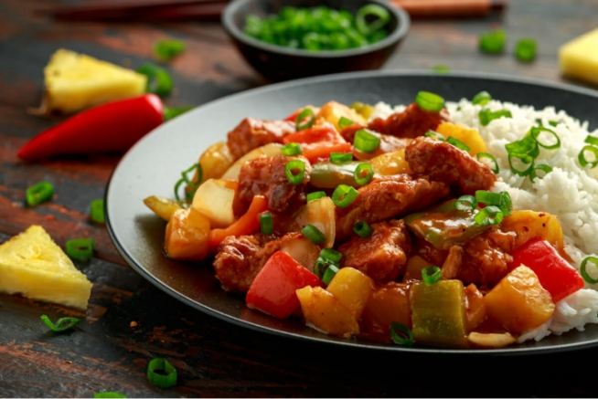

Pollo con piña delicioso
Una receta jugosa, fácil y con mucho sabor tropical.
Leer artículo
Arroz con Leche Tradicional
El clásico postre reconfortante que no falla nunca.
Leer artículo
Flan de Calabaza Casero
Un postre suave y dulce con el sabor de la calabaza.
Leer artículo
Ensalada fresca y sabrosa
Ligera, nutritiva y lista en 10 minutos.
Leer artículo